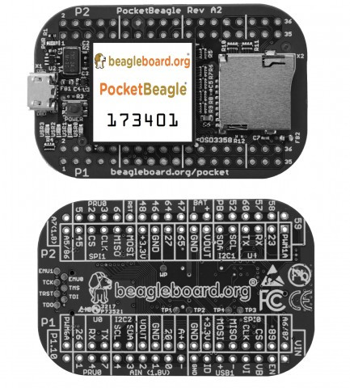
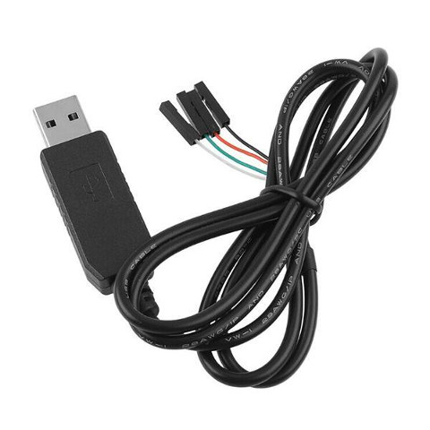
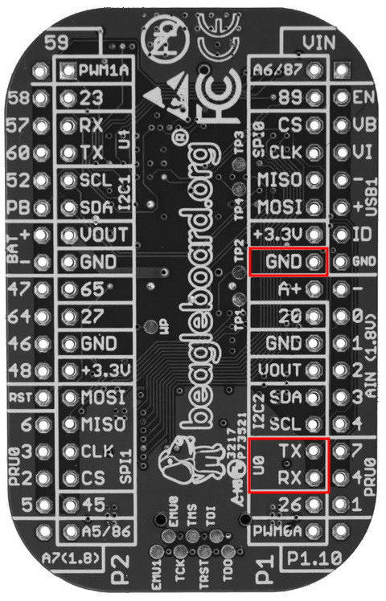

Steward
分享是一種喜悅、更是一種幸福
驅動程式 - Linux Device Driver (LDD) - 使用範例 - Assembly (ARM) - 開發環境
目前市面上，有許多ARM的開發板可以選擇使用，使用者可以選擇自己喜愛的款式，當然也可以使用QEMU測試，目前司徒選定的開發板如下：

需要一條USB轉UART傳輸線，目前司徒使用PL2303傳輸線：

需要焊接排針，把GND、U0-TX、U0-RX三根腳位連接到PL2303

接線如下：
| PocketBeagle | PL2303 |
|---|---|
| GND | 黑線 |
| U0-TX | 白線 |
| U0-RX | 綠線 |
製作MicroSD開機系統
$ cd $ wget https://github.com/steward-fu/website/releases/download/ldd/arm_sdcard.img $ sudo dd if=arm_sdcard.img of=/dev/sdX bs=1M
將MicroSD插入PocketBeagle，連結PL2303到電腦並且開啟minicom(115200bps)，就可以看到如下畫面
Welcome to PocketBeagle pocketbeagle login:
P.S. 輸入root就可以進入系統
為了避免發生驅動無法掛載的問題，需要自己編譯一次Kernel
$ cd
$ wget https://github.com/steward-fu/website/releases/download/ldd/arm_gcc-4.9.tar.gz
$ tar xvf arm_gcc-4.9.tar.gz
$ sudo mv gcc-4.9 /opt
$ export PATH=/opt/gcc-4.9/bin:$PATH
$ arm-linux-gnueabihf-gcc -v
gcc version 4.9.4 (Linaro GCC 4.9-2017.01)
$ wget https://github.com/steward-fu/website/releases/download/ldd/arm_kernel-4.14.108.tar.gz
$ tar xvf arm_kernel-4.14.108.tar.gz
$ cd kernel
$ ARCH=arm CROSS_COMPILE=arm-linux-gnueabihf- make pocketbeagle_defconfig
$ ARCH=arm CROSS_COMPILE=arm-linux-gnueabihf- make zImage dtbs -j4
P.S. 將編譯後的arch/arm/boot/zImage、arch/arm/boot/dts/am335x-pocketbeagle.dtb覆蓋到MicroSD第一分區的檔案